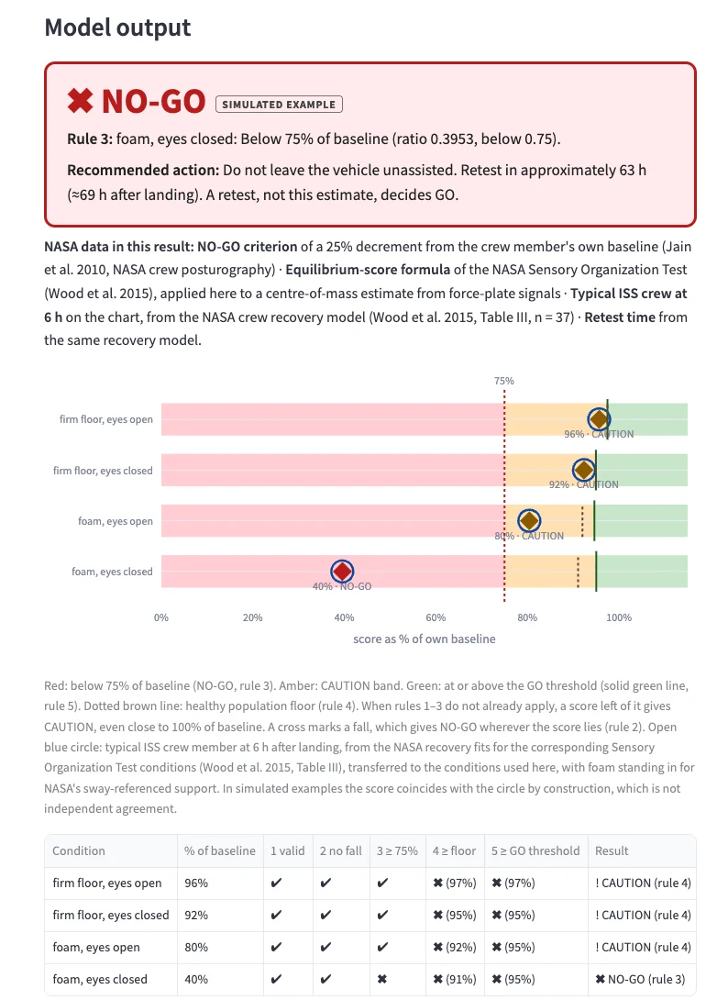
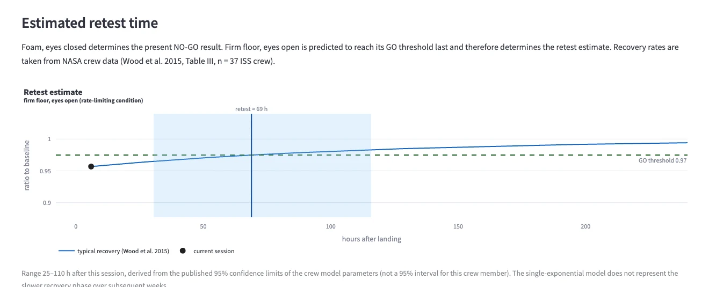
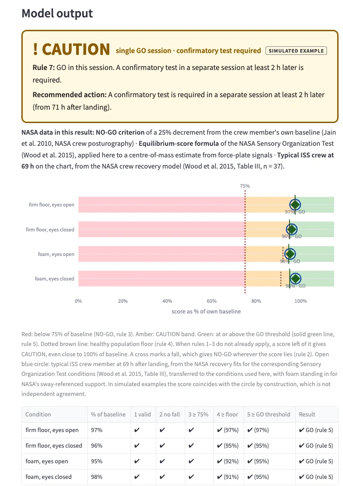
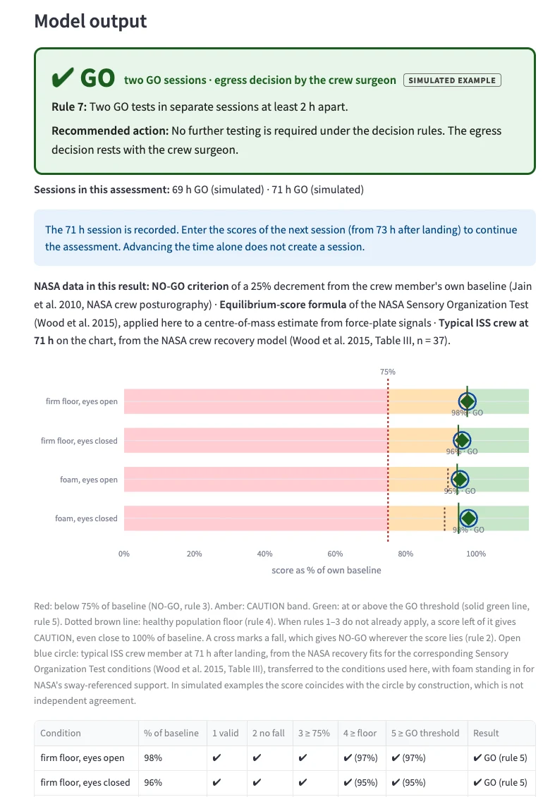
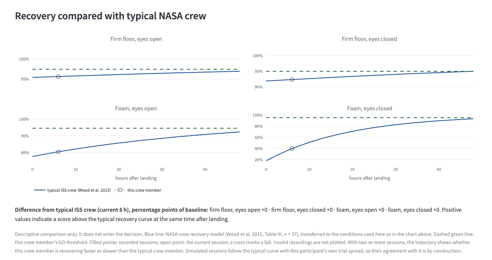
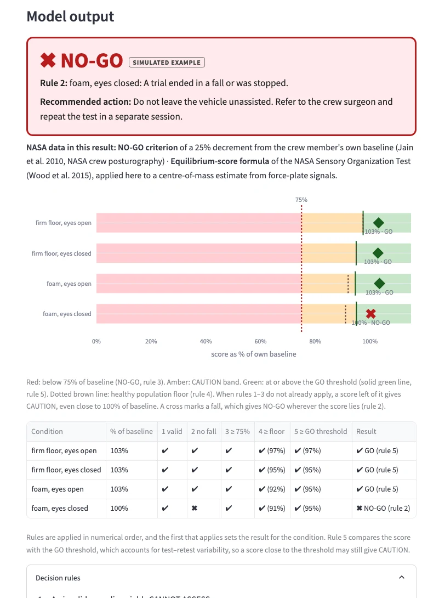
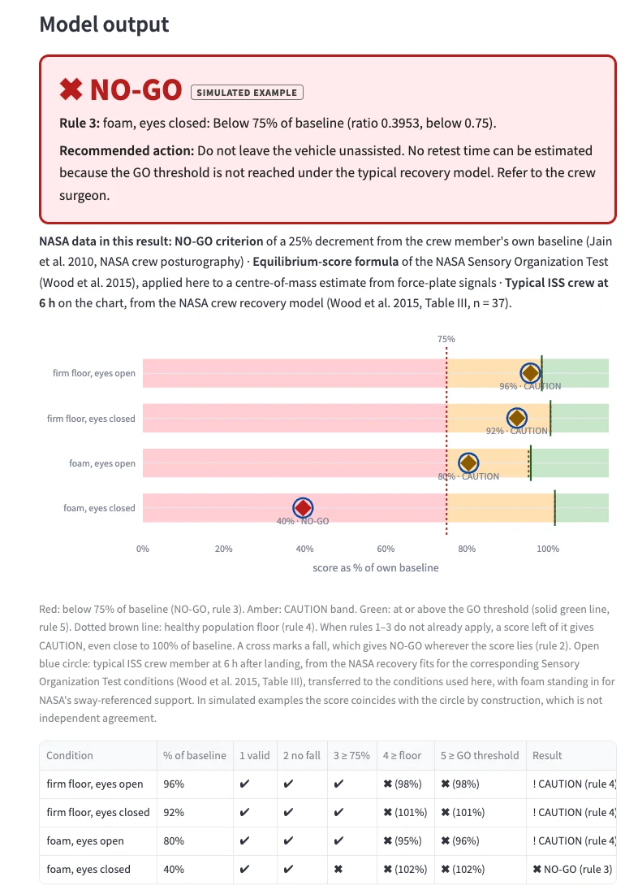

A worked session¶
This page follows participant A, a younger adult, from a simulated landing to an overall GO. Every value below is the output of the application for the corresponding example.
1 · Six hours after landing¶
Select A · younger adult · 6 h after landing.

The result is NO-GO under rule 3: on foam with eyes closed, the score is 40% of the participant's own baseline, below the 75% line. The other three conditions are at 80–96% of baseline but below the healthy population floor, which limits each of them to CAUTION under rule 4. The least favourable condition sets the overall result.
The recommended action reads: Do not leave the vehicle unassisted. Retest in approximately 63 h (≈69 h after landing). A retest, not this estimate, decides GO.
On the chart, each diamond is the participant's score, the solid green line is the GO threshold of that condition, the dotted brown line is the healthy population floor, and the open blue circle is the typical ISS crew member at the same time after landing (Wood et al. 2015, Table III).
2 · When to retest¶

Foam with eyes closed determines the present NO-GO, but it recovers fastest (time constant 19.4 h). Firm floor with eyes open has a small deficit and a long time constant (116.1 h), and its GO threshold lies close to baseline, so it reaches its threshold last and sets the estimate: approximately 63 h after this session, with a range of 25–110 h derived from the published 95% confidence limits of the recovery time constant. The method is described in Retest estimate.
3 · First GO session, 69 h after landing¶
Select A · younger adult · 69 h after landing, first GO.

Every condition now reaches its GO threshold, so the session is GO. The overall result is CAUTION under rule 7, which requires two consecutive GO sessions at least 2 h apart. The card states: A confirmatory test is required in a separate session at least 2 h later (from 71 h after landing).
To continue in the application, press Record this session. The time advances to 71 h, and the next session counts only once its own scores have been entered.
4 · Confirmatory session, 71 h after landing¶
Select A · younger adult · 71 h after landing, confirmatory session, which contains both recorded sessions.

The result is GO: No further testing is required under the decision rules. The egress decision rests with the crew surgeon. The session list shows both sessions and their source.
5 · Comparison with typical NASA crew¶

With several recorded sessions, the points show whether the crew member is recovering faster or slower than the typical ISS crew member. Simulated sessions follow the typical curve by construction. The comparison is descriptive and does not enter the decision.
Two further cases¶
A fall. In A · younger adult · baseline day, simulated fall, one trial on foam with eyes closed ends in a fall. The result is NO-GO under rule 2, whatever the score, and the card recommends referral to the crew surgeon and a repeat test in a separate session.

No retest estimate. For participant C, whose baselines on the firm floor with eyes closed and on foam with eyes closed lie below the healthy population floor, the GO threshold cannot be reached under the recovery model. The card states that no retest time can be estimated and refers the crew member to the crew surgeon. The application does not extrapolate a time it cannot support.
